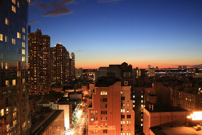

Wait for it...
This plugin allows you to add live effects to images and videos.
Setting it up is easy! Simply download the project from the github page, include it on the page and use it like the examples below.
A picture I took from my hotel in New-York in the summer of 2011
Simple grayscale, single effect. Hover over the image to see the original.
$(".toCanvas-gray").toCanvas({
hoverOpacity: 0,
process: [
{ grayscale: { } }
]
});You can change the HSL.
$(".toCanvas-hsl").toCanvas({
hoverOpacity: 0,
process: [
{ hue: { value: 50, colorize: true } },
{ saturation: { value: -50 } },
{ lightness: { value: +10 } }
]
});You can use convolution filters as well. Some come with toCanvas built in, like a gaussian filter.
$(".toCanvas-gauss").toCanvas({
hoverOpacity: 0,
process: [
{ gaussianBlur: { radius: 10} }
]
});Custom convolution filters are supported. The example below shows an example of a motion blur filter
$(".toCanvas-move").toCanvas({
hoverOpacity: 0,
process: [
{ convolutionFilter: { filter: [
[1/9, 0, 0, 0, 0, 0, 0, 0, 0],
[0, 1/9, 0, 0, 0, 0, 0, 0, 0],
[0, 0, 1/9, 0, 0, 0, 0, 0, 0],
[0, 0, 0, 1/9, 0, 0, 0, 0, 0],
[0, 0, 0, 0, 1/9, 0, 0, 0, 0],
[0, 0, 0, 0, 0, 1/9, 0, 0, 0],
[0, 0, 0, 0, 0, 0, 1/9, 0, 0],
[0, 0, 0, 0, 0, 0, 0, 1/9, 0],
[0, 0, 0, 0, 0, 0, 0, 0, 1/9]
] } }
]
});toCanvas works with html5 video. In the example below the canvas it not overlayed and shows an inverted version of the video below the actual video.
$('.toCanvas-video').toCanvas({
framerate: 10,
overlay: false,
process: [
{ invert: {} },
]
});